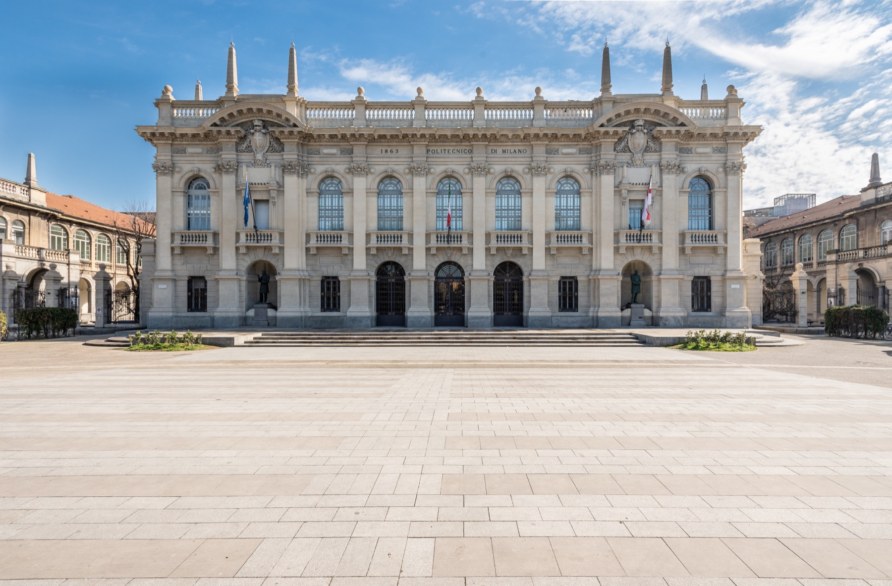

Location
Karlsruhe, Baden-Württemberg, Germany
Level
Entry-level / Junior
Focus
Geoinformatics, GIS, Data Analysis
Affiliations
Places I studied and worked.
 Karlsruhe Institute of Technology
Exchange and research assistant roles
Karlsruhe Institute of Technology
Exchange and research assistant roles




About
Geospatial analysis with a data-driven engineering mindset.
I completed an MSc in Geoinformatics Engineering at Politecnico di Milano, with exchange periods at the University of Bonn and the Karlsruhe Institute of Technology (KIT). My work connects geospatial data science with practical data workflows, including GIS analysis, Earth observation, Python development, dashboards, and machine-learning applications.
My master thesis, Inferring Map Generalization Operations from User Prompts, explored how cartographic generalization operations can be linked with AI and natural language to support decision-making in map design.
- Python-based geospatial data processing
- Remote sensing and Earth observation workflows
- Interactive dashboards and WebGIS applications
- Machine-learning pipelines for spatial data
Experience
Applied research, web development, GIS, and surveying support.
Jul 2025 - Mar 2026
GIS & Data Analyst, Research Assistant
- Developed Python-based data pipelines for processing and analyzing energy and mobility data.
- Performed spatial analyses to support energy-demand and decarbonization models.
- Built interactive dashboards with map integration for data-driven applications.
- Combined geospatial analysis, data processing, and visualization in applied research projects.
Jul 2025 - Dec 2025
Web Developer, Research Assistant
- Contributed to web applications with a focus on functionality and usability.
- Supported VR/AR projects for digital and interactive applications.
- Contributed to geospatial visualizations and digital map solutions.
TODO
May 2021 - Sep 2021
Intern
- Supported surveying, photogrammetry, and GIS projects in a practical work environment.
- Assisted with data collection, spatial analysis, and technical implementation.
- Applied AutoCAD and GIS tools for creating and processing geospatial data.
Education
Geoinformatics, geodesy, remote sensing, and surveying foundations.
MSc Geoinformatics Engineering
Sep 2023 - Mar 2026 | Completed | Grade: 102 / 110, approx. 1.5
Exchange student in geodesy at the University of Bonn from Oct 2025 to Mar 2026. Exchange student in remote sensing and geoinformation at KIT from Apr 2025 to Sep 2025.
Thesis: Inferring Map Generalization Operations from User Prompts
Relevant coursework: Geographic Information Systems, Machine Learning, Databases, Earth Observation, Geospatial Data Analysis, Geospatial Processing
BSc Surveying Engineering
Sep 2018 - Jul 2022 | Grade: 16.5 / 20, approx. 1.9
Thesis: Application of GIS and Big Data in Smart Cities
Relevant coursework: Surveying, Photogrammetry, Remote Sensing, Geographic Information Systems, Spatial Analysis, Geodesy
Skills
Technical strengths across geospatial data, software, and visualization.
Programming
Python, C++, JavaScript, SQL, MATLAB, object-oriented programming, modular development.
GIS & Remote Sensing
QGIS, ArcGIS, Google Earth Engine, raster and vector processing, CRS transformations, GeoJSON, Shapefiles.
Machine Learning
Scikit-learn, TensorFlow, PyTorch, classification, regression, clustering, CNNs, transfer learning, embeddings.
Data Engineering
Pandas, NumPy, GeoPandas, xarray, ETL workflows, data cleaning, pipeline design, Jupyter Notebooks.
Dashboards & Web
Plotly, Dash, Matplotlib, HTML, CSS, JavaScript, Nuxt.js, Flask, REST APIs, WebGIS applications.
Databases
PostgreSQL, PostGIS, SQLite, Oracle, spatial databases, and SQL-based data workflows.
Software Engineering
Git, GitHub, GitLab, Linux/Bash, Docker, GitHub Actions, CI/CD basics, pytest, debugging, documentation.
Cloud, Automation & Design
Google Cloud, Google Sheets API, Google Drive API, scripting, automation, AutoCAD, Civil3D, Figma.
Projects
Selected geospatial, machine-learning, dashboard, and surveying work.
MSc Thesis
GitHub
Inferring Map Generalization Operations from User Prompts
Machine-learning workflow connecting natural language with cartographic generalization operations, including data preparation, model training, and evaluation. GitHub repository.
Raster Simulation
GitHub
LayerAlterator
Python tool for rule-based raster modification using vector masks, percentage-based transformations, CRS consistency, validation, and modular extensibility. GitHub repository.
Deep Learning
GitHub
DL4CVRS Vehicle Detection Model
CNN and pretrained ResNet18 image-classification models with a complete training and evaluation pipeline, metrics, normalization, and error analysis. GitHub repository.

WebGIS
GitHub
AI-Based Landslide Susceptibility Mapping Website
Geospatial machine-learning and GIS workflow for landslide susceptibility analysis, integrating remote sensing, terrain, and infrastructure data in a WebGIS application. GitHub repository.
Earth Observation
GitHub
LandsatToolkit
Python library for processing and analyzing Landsat 7/8/9 satellite data, including metadata extraction, band processing, reprojection, and index calculation. GitHub repository.
Dashboard
GitHub
SE4G Geospatial Data Visualization Dashboard
Interactive dashboard for geospatial data visualization with maps, charts, API integration, and dynamic user interactions for exploratory analysis. GitHub repository.
Web Application
GitHub
PoliYoga Responsive Web Application
Responsive web platform for a yoga academy, with frontend, UX, database-related features, profiles, activities, user interactions, and dynamic content. GitHub repository.
Remote Sensing
GitHub
EOAdvanced Water Area Analysis in Eastern Venice
Satellite-data analysis of water-area changes in Eastern Venice, using NDWI-based indicators, maps, and statistical visualizations for trends from 2021 to 2024. GitHub repository.
Additional surveying and engineering projects
- Engineering surveying at the University of Tehran campus using total station data collection and plan preparation.
- Levelling project for height-difference measurement, classical levelling methods, error control, and documentation.
- Road planning between two cities with AutoCAD Civil 3D, route geometry, longitudinal profiles, and cut-and-fill volumes.
- 3D laser scanning of a building floor with point-cloud data capture, processing, and support for digital 3D models.
Contact
Open to realistic junior roles aligned with geoinformatics and data work.
I am interested in entry-level roles across geoinformatics, GIS, remote sensing, geospatial data analysis, data science, machine learning, and Python-based development.
donyadideganamir@gmail.com +49 176 2477 0243 GitHub: AmirDonyadide LinkedIn: amirhossein-donyadidegan
English: fluent
German: intermediate
Italian: intermediate
Driving license: Class B